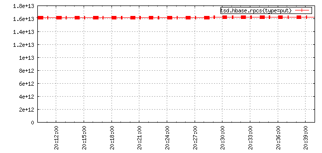
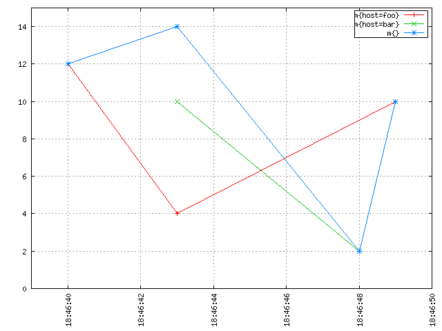

OpenTSDB was designed to efficiently combine multiple, distinct time series during query execution. The reason for this is that when users are looking at their data, most often they start at a high level asking questions like "what is my total throughput by data center?" or "what is the current power consumption by region?". After looking at these high level values, one or more may stick out so users drill-down into more granular data sets like "what is the throughput by host in my LAX data center?". We want to make it easy to answer those high level questions but still allow for drilling down for greater detail.
But how do you merge multiple individual time series into a single series of data? Aggregation functions provide the means of mathematically merging the different time series into one. Filters are used to group results by tags and aggregations are then applied to each group. Aggregations are similar to SQL's GROUP BY clause where the user selects a pre-defined aggregation function to merge multiple records into a single result. However in TSDs, a set of records is aggregated per timestamp and group.
Each aggregator has two components:
This document focuses on how aggregators are used in a group by context, i.e. when merging multiple time series into one. Additionally, aggregators can be used to downsample time series (i.e. return a lower resolution set of results). For more information, see Downsampling.
When aggregating or grouping each set of time series into one, the timestamps in every time series are aligned. Then for each timestamp, the values across all time series are aggregated into a new numerical value. That is, the aggregator will work across all of the time series at each timestamp. Think of the raw data as a matrix or table as in the following example that illustrates the sum aggregator as it works across two time series, A and B, to produce a new time series Output.
| Time Series | t0 | t0+10s | t0+20s | t0+30s | t0+40s | t0+50s |
|---|---|---|---|---|---|---|
| A | 5 | 5 | 10 | 15 | 20 | 5 |
| B | 10 | 5 | 20 | 15 | 10 | 0 |
| Output | 15 | 10 | 30 | 30 | 30 | 5 |
For timestamp t0 the data points for A and B are summed, i.e. 5 + 10 == 15. Next, the two values for ts1 are summed together to get 10 and so on. In SQL, this may look like SELECT SUM(value) FROM ts_table GROUP BY timestamp.
In the example above, both time series A and B had data points at every time stamp, they lined up neatly. However what happens when two series do not line up? It can be difficult, and sometimes undesired, to synchronize all sources of data to write at the exact same time. For example, if we have 10,000 servers sending 100 system metrics every 5 minutes, that would be a burst of 10M data points in a single second. We would need a pretty beefy network and cluster to accommodate that traffic. Not to mention the system would be sitting idle for 4 minutes and 59 seconds. Instead it makes much more sense to splay the writes over time so that we have an average of 3,333 writes per second to reduce our hardware and network requirements.
How do you sum or find the avg of a number and something that doesn't exist? One's first instinct is to just return the valid data points and be done with it. However what if you're dealing, as above, with thousands of sources where the data points are simply unaligned? For example, the following graph shows a time series with writes that are unaligned, resulting in a jagged line that is confusing to read:

Alternatively, you could simply ignore the data points for all time series at a given time stamp where any series is missing data. But if you have two time series and they are simply miss-aligned, your query would return an empty data set even though there is good data in storage, so that's not necessarily very useful.
Another option is to define a scalar value (e.g. 0 or the maximum value for a Long) to use whenever a data point is missing. OpenTSDB 2.0 and later provides a few aggregation methods that substitute a scalar value for missing data points and indeed, the graph above was generated using the zimsum aggregator that replaces unaligned values with a zero. This kind of substitution can be useful when working with distinct value time series such as the total number of sales in at a given time but doesn't work when dealing with averages or visually verifying a graph looks good.
One answer OpenTSDB provides is to use the well defined numerical analysis method of interpolation to make a guess as to what the value would be at that point in time. Interpolation uses existing data points for a time series to calculate a best guess value at the time stamp requested. Using OpenTSDB's linear interpolation we can smooth out our unaligned graph to get:
For a numerical example, take a look at these two time series where the sources issue a value every 20 seconds and the data is simply offset by 10 seconds:
| Time Series | t0 | t0+10s | t0+20s | t0+30s | t0+40s | t0+50s | t0+60s |
|---|---|---|---|---|---|---|---|
| A | na | 5 | na | 15 | na | 5 | na |
| B | 10 | na | 20 | na | 10 | na | 20 |
When OpenTSDB is calculating an aggregation it starts at the first data point found for any series, in this case it will be the data for B at t0. We request a value for A at t0 but there isn't any data there. We know that there is data for A at t0+10s but since we don't have any value before that, we can't make a guess as to what it would be. Thus we simply return the value for B.
Next we run across a value for A at time t0+10s. We request a value for t0+10s from time series B but there isn't one. But B knows there is a value at t0+20s and we had a value at t0 so we can now calculate a guess for t0+10s. The formula for linear interpolation is y = y0 + (y1 - y0) * ((x - x0) / (x1 - x0)) where, for series B, y0 = 10, y1 = 20, x = t0+10s (or 10), x0 = t0 (or 0) and x1 = t0+20s (or 20). Thus we have y = 10 + (20 - 10) * ((10 - 0) / (20 - 0) which will reduce to y = 10 + 10 * (10 / 20) further reducing to y = 10 + 10 * .5 and y = 10 + 5. Therefore B will give us a guestimated value of 15 at t0+10s.
Iteration continues over every timestamp for which a data point is found for every series returned as a part of the query. The resulting series, using the sum aggregator, will look like this:
| series | t0 | t0+10s | t0+20s | t0+30s | t0+40s | t0+50s | t0+60s |
|---|---|---|---|---|---|---|---|
| A | na | 5 | na | 15 | na | 5 | na |
| B | 10 | na | 20 | na | 10 | na | 20 |
| Interpolated A | 10 | 10 | |||||
| Interpolated B | 15 | 15 | 15 | na | |||
| Summed Result | 10 | 20 | 30 | 25 | 20 | 20 | 20 |
More Examples:
For the graphically inclined we have the following examples. An imaginary metric named m is recorded in OpenTSDB. The "sum of m" is the blue line at the top resulting from a query like start=1h-ago&m=sum:m. It's made of the sum of the red line for host=foo and the green line for host=bar:

It seems intuitive from the image above that if you "stack up" the red line and the green line, you'd get the blue line. At any discrete point in time, the blue line has a value that is equal to the sum of the value of the red line and the value of the green line at that time. Without interpolation, you get something rather unintuitive that is harder to make sense of, and which is also a lot less meaningful and useful:
Notice how the blue line drops down to the green data point at 18:46:48. No need to be a mathematician or to have taken advanced maths classes to see that interpolation is needed to properly aggregate multiple time series together and get meaningful results.
At the moment OpenTSDB primarily supports linear interpolation (sometimes shortened "lerp") along with some aggregators that will simply substitute zeros or the max or min value. Patches are welcome for those who would like to add other interpolation methods.
Interpolation is only performed at query time when more than one time series are found to match a query. Many metrics collection systems interpolate on write so that you original value is never recorded. OpenTSDB stores your original value and lets you retrieve it at any time.
Here is another slightly more complicated example that came from the mailing list, depicting how multiple time series are aggregated by average:

The thick blue line with triangles is the an aggregation with the avg function of multiple time series as per the query start=1h-ago&m=avg:duration_seconds. As we can see, the resulting time series has one data point at each timestamp of all the underlying time series it aggregates, and that data point is computed by taking the average of the values of all the time series at that timestamp. This is also true for the lonely data point of the squared-purple time series, that temporarily boosted the average until the next data point.
Note
Aggregation functions return integer or double values based on the input data points. If both source values are integers in storage, the resulting calculations will be integers. This means any fractional values resulting from the computation will be lopped off, no rounding will occur. If either data point is a floating point value, the result will be a floating point. However if downsampling or rates are enabled, the result will always be a float.
As mentioned above, interpolation is one means of handling missing data. But some users hate the fact that linear interpolation is a way of lying about the data because it generates phantom values. Instead one means of handling unaligned values is through downsampling. For example, if sources report a value every minute but they're skewed in time across that minute, provide a downsampling on 1 minute for every query across that source data. This will have the result of snapping the values to the same timestamp across each time series so that interpolation is mostly avoided. Interpolation will still occur when a downsampling bucket is missing a value.
See Downsampling for details and examples on avoiding interpolation.
Note
In general it's a good ideal to downsample every query that will incorporate multiple time series.
The following is a description of the aggregation functions available in OpenTSDB. Note that some should only be used for grouping and others for downsampling.
| Aggregator | TSD Version | Description" | Interpolation |
|---|---|---|---|
| avg | 1.0 | Averages the data points | Linear Interpolation |
| count | 2.2 | The number of raw data points in the set | Zero if missing |
| dev | 1.0 | Calculates the standard deviation | Linear Interpolation |
| ep50r3 | 2.2 | Calculates the estimated 50th percentile with the R-3 method * | Linear Interpolation |
| ep50r7 | 2.2 | Calculates the estimated 50th percentile with the R-7 method * | Linear Interpolation |
| ep75r3 | 2.2 | Calculates the estimated 75th percentile with the R-3 method * | Linear Interpolation |
| ep75r7 | 2.2 | Calculates the estimated 75th percentile with the R-7 method * | Linear Interpolation |
| ep90r3 | 2.2 | Calculates the estimated 90th percentile with the R-3 method * | Linear Interpolation |
| ep90r7 | 2.2 | Calculates the estimated 90th percentile with the R-7 method * | Linear Interpolation |
| ep95r3 | 2.2 | Calculates the estimated 95th percentile with the R-3 method * | Linear Interpolation |
| ep95r7 | 2.2 | Calculates the estimated 95th percentile with the R-7 method * | Linear Interpolation |
| ep99r3 | 2.2 | Calculates the estimated 99th percentile with the R-3 method * | Linear Interpolation |
| ep99r7 | 2.2 | Calculates the estimated 99th percentile with the R-7 method * | Linear Interpolation |
| ep999r3 | 2.2 | Calculates the estimated 999th percentile with the R-3 method * | Linear Interpolation |
| ep999r7 | 2.2 | Calculates the estimated 999th percentile with the R-7 method * | Linear Interpolation |
| first | 2.3 | Returns the first data point in the set. Only useful for downsampling, not aggregation. | Indeterminate |
| last | 2.3 | Returns the last data point in the set. Only useful for downsampling, not aggregation. | Indeterminate |
| mimmin | 2.0 | Selects the smallest data point | Maximum if missing |
| mimmax | 2.0 | Selects the largest data point | Minimum if missing |
| min | 1.0 | Selects the smallest data point | Linear Interpolation |
| max | 1.0 | Selects the largest data point | Linear Interpolation |
| none | 2.3 | Skips group by aggregation of all time series. | Zero if missing |
| p50 | 2.2 | Calculates the 50th percentile | Linear Interpolation |
| p75 | 2.2 | Calculates the 75th percentile | Linear Interpolation |
| p90 | 2.2 | Calculates the 90th percentile | Linear Interpolation |
| p95 | 2.2 | Calculates the 95th percentile | Linear Interpolation |
| p99 | 2.2 | Calculates the 99th percentile | Linear Interpolation |
| p999 | 2.2 | Calculates the 999th percentile | Linear Interpolation |
| sum | 1.0 | Adds the data points together | Linear Interpolation |
| zimsum | 2.0 | Adds the data points together | Zero if missing |
* For percentile calculations, see the Wikipedia article. For high cardinality calculations, using the estimated percentiles may be more performant.
Calculates the average of all values across the downsampling bucket or across multiple time series. This function will perform linear interpolation across time series. It's useful for looking at gauge metrics.
Note
Even though the calculation will usually result in a floating point value, if the data points are recorded as integers, an integer will be returned losing some precision.
Returns the number of data points stored in the series or range. When used to aggregate multiple series, zeros will be substituted. When used with downsampling, it will reflect the number of data points in each downsample bucket. When used in a group-by aggregation, reflects the number of time series with values at a given time.
Calculates the standard deviation across a bucket or time series. This function will perform linear interpolation across time series. It's useful for looking at gauge metrics.
Note
Even though the calculation will usually result in a floating point value, if the data points are recorded as integers, an integer will be returned losing some precision.
Calculates various percentiles using a choice of algorithms. These are useful for series with many data points as some data may be kicked out of the calculation. When used to aggregate multiple series, the function will perform linear interpolation. See Wikipedia for details. Implementation is through the Apache Math library.
These aggregators will return the first or the last data point in the downsampling interval. E.g. if a downsample bucket consists of the series 2, 6, 1, 7 then the first aggregator will return 1 and last will return 7. Note that this aggregator is only useful for downsamplers.
Warning
When used as a group-by aggregator, the results are indeterminate as the ordering of time series retrieved from storage and held in memory is not consistent from TSD to TSD or execution to execution.
The inverse of min, it returns the largest data point from all of the time series or within a time span. This function will perform linear interpolation across time series. It's useful for looking at the upper bounds of gauge metrics.
The "maximum if missing minimum" function returns only the smallest data point from all of the time series or within the time span. This function will not perform interpolation, instead it will return the maximum value for the type of data specified if the value is missing. This will return the Long.MaxValue for integer points or Double.MaxValue for floating point values. See Primitive Data Types for details. It's useful for looking at the lower bounds of gauge metrics.
The "minimum if missing maximum" function returns only the largest data point from all of the time series or within the time span. This function will not perform interpolation, instead it will return the minimum value for the type of data specified if the value is missing. This will return the Long.MinValue for integer points or Double.MinValue for floating point values. See Primitive Data Types for details. It's useful for looking at the upper bounds of gauge metrics.
Returns only the smallest data point from all of the time series or within the time span. This function will perform linear interpolation across time series. It's useful for looking at the lower bounds of gauge metrics.
Skips group by aggregation. This aggregator is useful for fetching the raw data from storage as it will return a result set for every time series matching the filters. Note that the query will throw an exception if used with a downsampler.
Calculates various percentiles. When used to aggregate multiple series, the function will perform linear interpolation. Implementation is through the Apache Math library.
Calculates the sum of all data points from all of the time series or within the time span if down sampling. This is the default aggregation function for the GUI as it's often the most useful when combining multiple time series such as gauges or counters. It performs linear interpolation when data points fail to line up. If you have a distinct series of values that you want to sum and you do not need interpolation, look at zimsum
Calculates the sum of all data points at the specified timestamp from all of the time series or within the time span. This function does not perform interpolation, instead it substitutes a 0 for missing data points. This can be useful when working with discrete values.
With the HTTP API running on a TSD, users can query the /api/aggregators to get a list of aggregators implemented on the TSD.